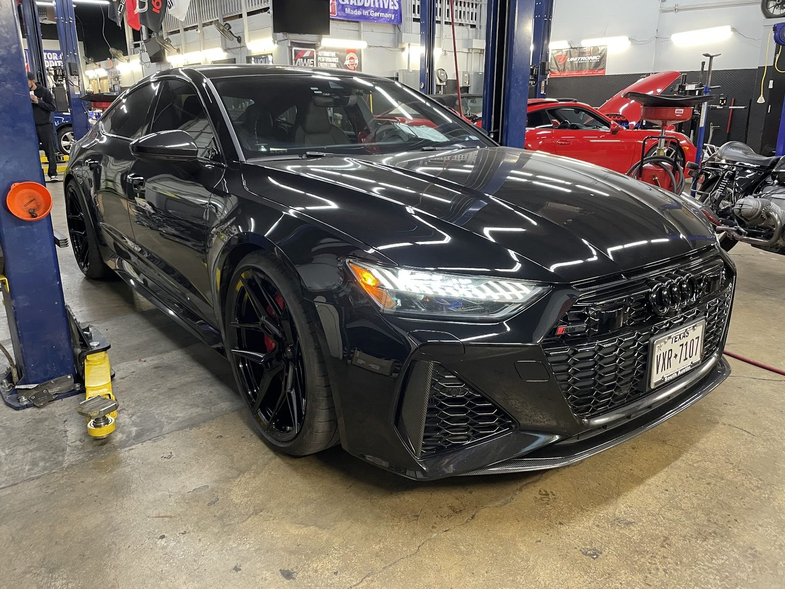

Oil change and brake service
Routine service on European cars, done properly and professionally.
Oil change, BrakesEuropean auto repair · S Congress Ave, Austin
Volkswagen, Audi, Porsche, Mercedes-Benz and BMW, plus performance work. Know what was wrong, and see the proof.

(04) About

Under a blue sign with a script car outline, we service, tune and repair Volkswagen, Audi, Porsche, Mercedes-Benz and BMW.
Test notes kept, fixes shown, fair prices and work finished on schedule. Friendly, professional staff.
(01) Services
Service, performance and repair for the five European marques the shop is known for.
Routine service on European cars, done properly and professionally.
Oil change, BrakesBring your import in before a light turns into a bigger, pricier problem.
Check engine light, Test notesTests documented, causes explained and the fix shown.
A/C, Evidence of the fixSouth Austin performance shop. Quick turnaround on European tuning.
Euro tuning, PerformanceCustom exhaust work for European cars.
ExhaustNew rims, tires and valve covers, finished on schedule.
Rims, Tires(03) Clients
1Tanner and Luis are amazing to work with. Dropped off my Tiguan as I was having some ac issues and needed an oil change. They properly had notes from their tests documenting what was causing my issues and corrected it showing evidence as well. Honest shop giving the customer knowledge of their car’s health and status is not common these days. Truly appreciate the team at Eurofed Austin.
2Fantastic performance shop in S Austin! Great communication and quick turnaround. I will for sure be coming back to these guys for any of my euro tuning needs. Highly recommended!
3I just recently had Eurofed put new rims, tires and valve covers on my C8 corvette. Their pricing was fair and Derrick did an awesome job working on the car, and finishing on schedule. Tanner was very nice and very professional. Thanks guys !!!
Hours & directions
6534 S Congress Ave, Austin, TX 78745
Open Monday to Friday. Bring your keys and any notes on the noise or warning light.